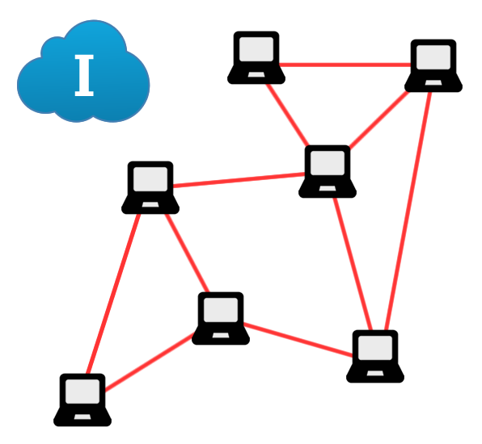
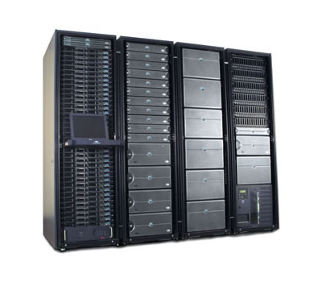
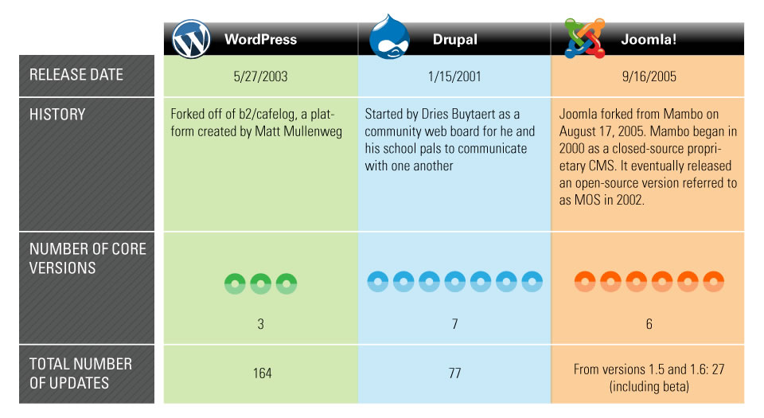

#JTLDW
Sistemas de Gestión de Contenidos
Disertante Ing. Farid Astorga / @faridastorga
¿De que vamos a hablar?
CMS
Content Management System
Objetivos de la Jornada
- Presentar los conceptos fundamentales
- Implementar un CMS > Tipo profesional
Módulo 1
Conocimientos esenciales
Internet
Arquitectura

Entorno de Trabajo

Alojamiento Web

Acceso al Servidor
Servidor Web

En la realidad...

Servidores en
Torre, Rack o Blade

Rack de Servidores
Centro de Datos

Nombre de Dominios
Servidores DNS
Integramos un poco 1
Integramos un poco 2


¿PREGUNTAS?
Módulo 2
Introducción a los CMS
¿Qué son los CMS?
“Un CMS es un programa que permite crear una estructura de
soporte (framework) para la creación y administración de
contenidos, principalmente páginas web...
Consiste en una interfaz que controla una o varias
bases de datos donde se aloja el contenido del sitio web.
El sistema permite manejar de manera independiente
el contenido y el diseño.”
Wikipedia
Organización
Posee una estructura
sólida para su contenido.
Publicación de Contenidos
Los contenidos son
totalmente editables.
Escalabilidad
Agregar servicios de
valor a los usuarios.
Administración de usuarios
Es jerárquica y posee
niveles de accesos.
Diseño y aspecto estético
El contenido va separado de la forma de presentarlo.
Navegación y menú
Integración entre el
contenido y la forma de accesarlo.

Administrar multimedios
Gestión de archivos
multimedia 2.0
Disposición de módulos
La posición de los módulos puede acomodarse como se prefiera.
Implementaciones
- Comercio Electrónico.
- Portales de Noticias.
- Comunidades Sociales.
- Foros de debates.
- Sitios Web Personales.
- Sitios Web Empresariales.
MÁXIMOS EXPONENTES

Comparativa de los 3 CMS
Lanzamientos y versiones
Extensiones y plantillas
Uso a nivel mundial
Facilidades y orientación
Acceso al recurso en la Web

¿PREGUNTAS?
Módulo 3
CMS Joomla! A fondo
¿PREGUNTAS?
Módulo 4
Publicación en Internet
¿PREGUNTAS?
Poner código o comandos...
function cooperar (asociado) {
if( noLabura (asociado) ) {
var resultado = realizarVotacion (mosiones);
for( var i = 0, len = coop.asociados; i < len; i++ ) {
var asociado = asociado[i];
if( asociado.asociado[i].voto ) {
printf (asociado.asociado[i].voto);
}
}
}
}
Fantastic Ordered List
- One is smaller than...
- Two is smaller than...
- Three!
Fragment Styles
There's a few styles of fragments, like:
grow
shrink
roll-in
fade-out
highlight-red
highlight-green
highlight-blue
current-visible
highlight-current-blue